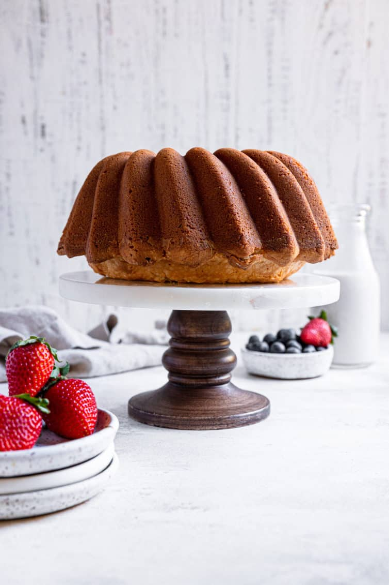

Cream Cheese Pound Cake
01/Feb
If you are looking for the perfect cream cheese pound cake recipe that turns out buttery, moist, and dense each and every time, add this year-round crowd-pleaser to your list! Using only 7 simple ingredients, this easy cream cheese pound cake will quickly become your favorite; serve plain with a sprinkle of powdered sugar or offer homemade whipped cream and berries, or a drizzle of salted caramel or fudge sauce

I consider a really good pound cake to be an essential for everyone's recipe box or binder; if flavored the right way, it can stand on its own, but can also be dressed up with toppings or cut up to layer in a trifle. Whether you're looking for a weeknight dessert or something everyone will love for a holiday or birthday party, this cream cheese pound cake will never let you down!
It's incredibly simple to make and while a standard pound cake does not contain cream cheese, it really adds such a tremendous amount of moisture, tenderness, and flavor, making it, in my opinion, the best ever. This is by far my absolute favorite pound cake recipe!
